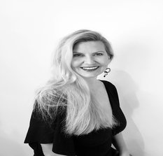
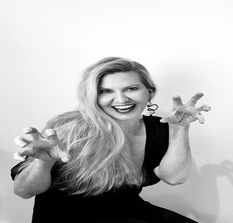
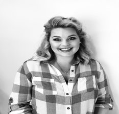
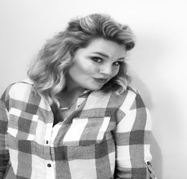
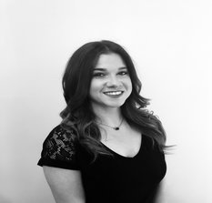
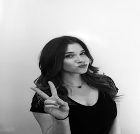
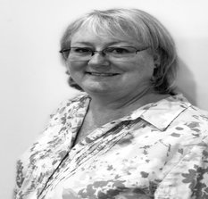
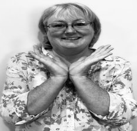

Meet the team
-

I am originally from Northern California, but have lived in Tulsa for many years. I have two children and two lovely grandchildren who call me Zsa Zsa. I love reading and spending time outdoors in my beautiful garden.
I began my career in 2002. My passion for knowledge and excellence then lead me to Aveda salon, Ihloff. Once there, I quickly landed the Master Stylist chair and became an In-Salon Educator. This passion still drives me; I am dedicated to always learning and growing with trends, products, and the science behind them. Whilst having extensive knowledge in men’s grooming, I also specialize in women’s cuts, natural looking “lived in” color and blondes.
To schedule an appointment with Helen, please call or text (918) 282-4096.
-
I’ve lived in Oklahoma my entire life. As of recent, I was married and moved to a small town north of Tulsa called Talalah. We now have a beautiful blended family with lots of sweet grandbabies, including our newest addition, Lexi, an awesome border collie! My love for the outdoors has increased, and I love working in the garden and sharing my harvest with family and friends. My passion for hair started as a child, cutting my dolly’s hair and eventually my mom’s hair. My professional career started in Tulsa over 26 years ago. I am proud to say I worked at The Cancer Treatment Center of America for three years where I gained knowledge of the effects of cancer treatments on the scalp, hair and soul and how I can help with that process. I have a passion not only for hair, but I love helping women feel beautiful from the inside out. To schedule an appointment with Dessie, please call or text (918) 698-7490.
-

My career started over 14 years ago in Tulsa. I worked at ARCS Salon for four years and trained under the director for Paul Mitchell before becoming an In-Salon Educator. I then opened my own salon, but decided to close it to start a family. My husband and I have three kids: Broox, Kole, and August. We moved to OKC but I commute back to Tulsa frequently to keep my passion going and my clients happy. Doing hair is what keeps me going every day and has become my escape from the crazy world of three kids under five! I have loved earning every single one of my clients and consider a lot of them like family! To schedule an appointment with Melora, please call or text (918) 402-0269.
-

I was born and raised in Tulsa, ok. I am a proud mother of two beautiful children and marrying the love of my life this year. I enjoy spending time with my family and friends. My interest in the skin care industry began a few years ago when I was sitting at my office job and realized this was not what I wanted to do for the rest of my life. I wanted to make a difference in people’s lives and feel good about what I was doing. That’s when I knew I was going to turn my interest in the skin care industry into my passion and career. I attended the esthetics program in Jenks, OK in 2016 and started my career soon after. I love my job and seeing my clients happy and feeling good about their skin. I love and believe in our products as I use them myself daily! I strive to make every client feel relaxed, educated, beautiful and help them achieve healthier skin. To schedule an appointment with Kristin, please call or text (918) 260-2910.
-

I’m so proud to call Tulsa my home for the past 40 years. I met and married my husband at the University of Tulsa where I earned a Bachelor of Science in Nursing. After raising my children I decided to start a second career and follow my dream of becoming a massage therapist. I love being able to help people feel better and relax through massage. To schedule an appointment with Jennifer, please call or text (918) 407-7311.